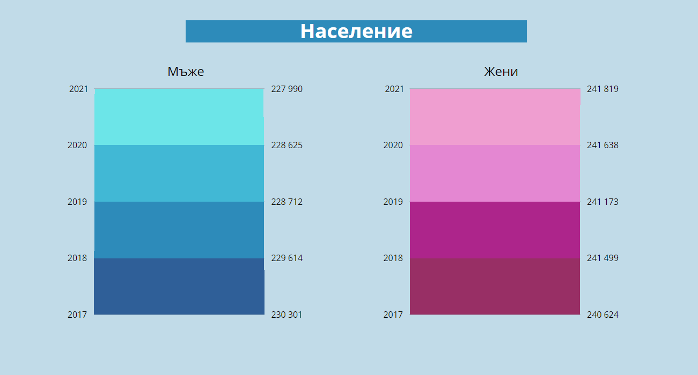
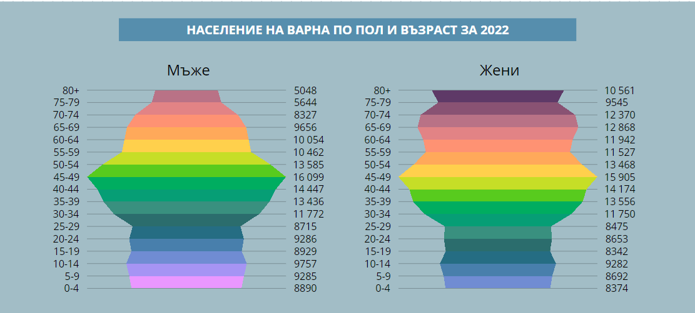
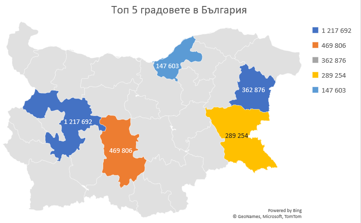

Анализ за Население на Варна по пол и възраст за 2022г.
Формата на графиката е неправилна вследствие на ниската раждаемост в годините след социалистическото управление в страната. Наблюдава се превез на жените и състаряване на населението. Отношението на жените под, в и над трудоспособна възраст е 1370 : 7 400 : 1230 на 10 000. А за мъжете - 1 900 : 7 200 : 900 на 10 000. Видимо последните 30 години населението на страната състарява поради спада на раждаемост и високия процент емигриращи извън България.

